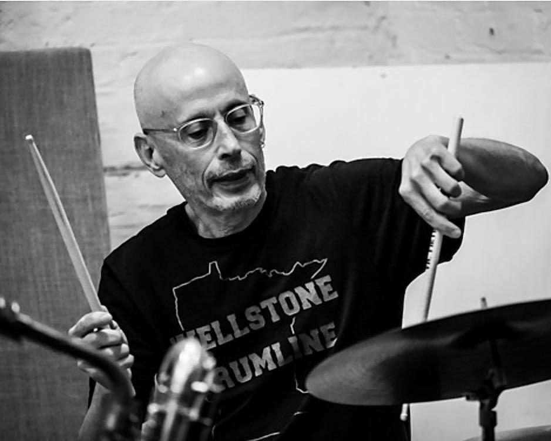
Photo courtesy of Peter Gannushkin
Steve Hirsh composes music on the drumset. His music is created in real-time, on the bandstand. This music cannot be defined, limited or categorized by genre. It is a process for creating that draws from all the influences of all the players. Based in Minnesota, Steve tours nationally and collaborates with improvising musicians around the world. Among those he has worked with are Daniel Carter, William Parker, Dave Sewelson, Matthew Shipp, Eri Yamamoto, Steve Swell, Sally Gates, Matt Hollenberg, Zoh Amba, Ellen Christi, Luke Stewart and Joel Futterman. His collaborations with top free-jazz innovators have shaped a responsive, interactive style that anchors the ensembles with both rhythmic drive and creative color.
Some thoughts about the music: 15 Questions
Contact: steve@stevehirshdrums.com
Released for pre-order, full release April 30: Who Does Not Seek The Sky? Echo Party (Chad Fowler, Art Edmaiston, Alex Greene, Khari Wynn, Steve Hirsh)
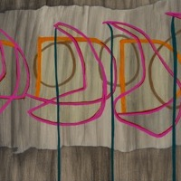
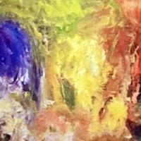
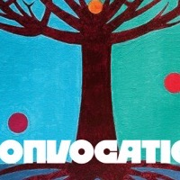
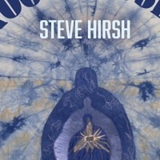
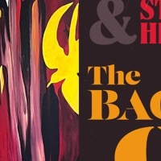
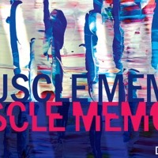
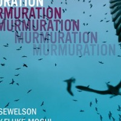
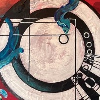
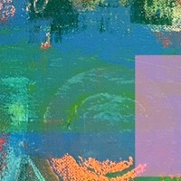
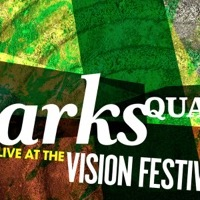
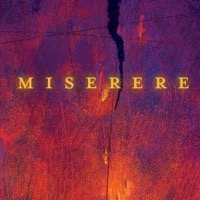
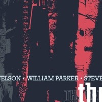
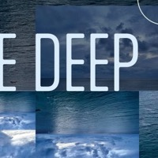
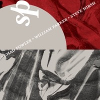
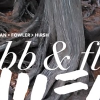
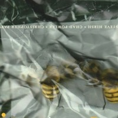
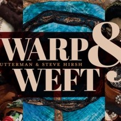
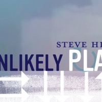
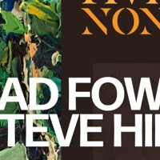
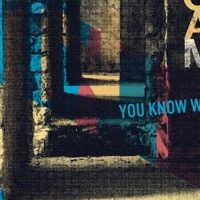
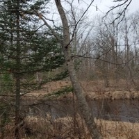